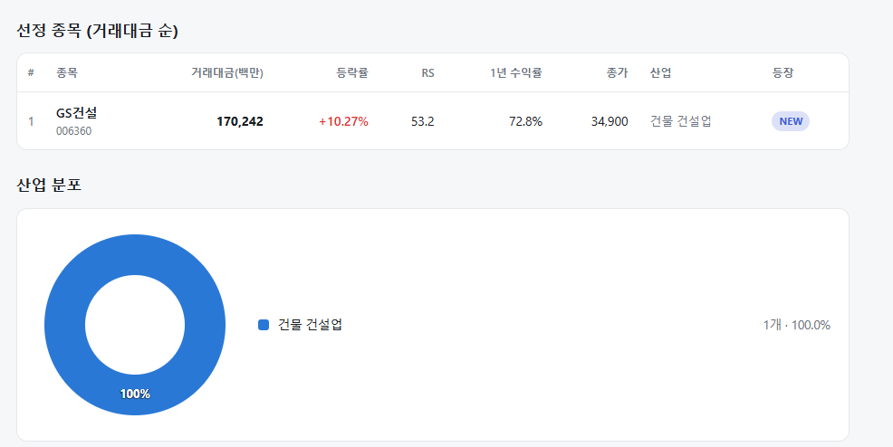
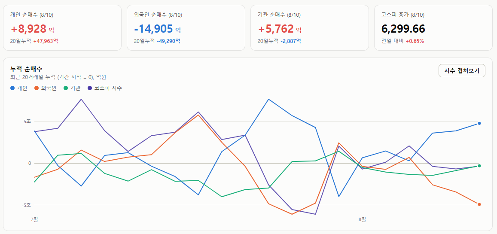
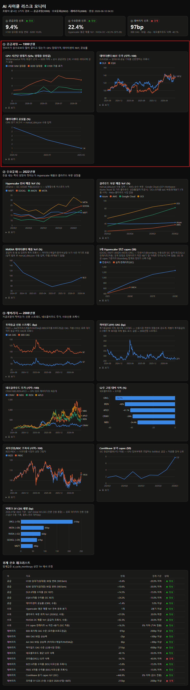

매일의 주도주 정리를 위해 기록합니다.
연속적으로 나온 종목들 또는 상승 후 조정받는 종목 위주로 리서치 해보시면 좋을 것 같습니다.

*오늘의 퀀트픽은 없습니다.
#주도섹터
바이오·제약 및 헬스케어
주요 종목: 앱클론(+23.93%), 대화제약(+19.05%), 프로티나(+17.76%).
분석: 생물공학 업종이 +9.56% 상승했습니다. 지수 안정화 국면에서 상대적 고베타 자산인 앱클론(+23.93%)과 프로티나(+17.76%) 등 개별 제약·바이오 품목으로 기관 및 개인의 유동성이 가파르게 집적되었습니다.
스페이스X·우주항공 및 광통신·IT 인프라
주요 종목: 비츠로넥스텍(+29.93% 상한가), 대한광통신(+22.51%), 센서뷰(+17.65%), 아이티센글로벌(+16.52%), 솔트룩스(+9.32%).
분석: 광통신 테마가 +10.44%, 스페이스X 테마가 +9.17% 상승했습니다. 미 우주항공 이슈와 연동되어 비츠로넥스텍이 가격제한폭까지 올랐으며, 광통신 네트워크 장비주인 대한광통신(+22.51%) 및 센서뷰(+17.65%)로 테마성 자금이 분산 유입되었습니다.
건설·원자재 및 증권·시클리컬
주요 종목: 고려아연(+11.66%), GS건설(+10.27%), 현대힘스(+8.65%), 에코프로(+8.37%), 미래에셋증권(+8.11%).
분석: 비철금속 업종(+10.01%)의 고려아연(+11.66%)이 원자재 재평가로 강세를 보였습니다. 증권(미래에셋증권) 및 2차전지(에코프로)로도 온기가 확산되었습니다.
#수급동향

코스피 지수는 +0.65% 상승한 6,299.66으로 마감하며 6,300선 안착을 시도했습니다. 대형주 중심의 코스피 200 지수 역시 +0.32% 상승한 977.84를 기록했습니다. 코스닥 지수는 +6.97% 급등한 854.47로 장을 마치며 강한 수급 회복세를 보였습니다.
유가증권시장에서 개인 투자자가 9,003억 원, 기관 투자자가 5,669억 원을 각각 순매수하며 지수 하단을 받쳤습니다. 반면 외국인 투자자는 1조 4,887억 원을 순매도했습니다.

AI 사이클은 어떻게 끝나는가_1편 공급과잉(1999년형)
역사를 보면 기술 인프라 호황이 끝나는 경로는 셋이었습니다. ① 공급과잉(1999년 닷컴형), ② 수요둔화(2022년 긴축형), ③ 레버리지(2008년 금융위기형). 저는 이 세 경로를 추적하는 대시보드를 만들어 매주 자동 갱신하고 있습니다. 이 시리즈에서 한 경로씩, 역사와 현재 수치를 대조해봅니다. 오늘은 1편, 공급과잉입니다.
1999년, 광섬유는 어떻게 남아돌게 됐나
닷컴 붐의 물리적 실체는 광섬유였습니다. "트래픽이 100일마다 2배"라는 전망을 근거로 통신사들이 경쟁적으로 케이블을 깔았는데, 중요한 건 1999년 당시에는 대역폭이 부족해 보였다는 점입니다. 과잉은 착공한 케이블이 2000~2001년 일제히 완공되면서 갑자기 왔습니다. 부설된 광섬유의 85~95%가 불 꺼진 채 방치됐고, 대역폭 도매가격은 90% 이상 폭락했으며, 글로벌크로싱·월드컴이 연쇄 파산했습니다.
공급과잉의 첫 신호는 실적도 주가도 아닌, 인프라의 '스팟 가격'과 '공실'에 먼저 찍힙니다.
계기판 ① GPU 임대가 — 이번 사이클의 '대역폭 가격'
GPU 마켓플레이스의 임대중 가격 중앙값입니다. 남아도는 순간 스팟 가격이 가장 먼저 무너집니다.
1월 말 8월 현재 90일 변화 H100 (구세대) $1.73/hr $2.33/hr +9.4% B200 (최신세대) $2.82/hr $5.9/hr +10.6%이며 하락은커녕 올해 내내 상승 중이고, B200은 임대중 가격과 대기 호가가 같은 완판 시장입니다. H100은 세대교체 감가가 섞이므로 순수한 과잉 신호는 B200 하락 여부로 봅니다.
계기판 ② 데이터센터 공실률
CBRE 북미 1차 시장 공실률은 1.9% → 1.6% → 1.4%(사상 최저) 로 하락 행진 중입니다. 2026년 1분기엔 재고가 전년 대비 33% 늘었는데도 톱4 시장 전부 사상 최저 — 북버지니아는 0.3%, 신규 물량의 70% 이상이 착공 전 임차 완료입니다. 닷컴기 광섬유의 90%가 놀았다면, 지금 데이터센터는 지어지기 전에 임자가 정해져 있습니다.
계기판 ③ 데이터센터 REIT
임대수요·공실 전망을 선반영하는 DLR·EQIX는 6개월 +14%, +25% 로 고점권입니다. 시장은 공실의 미래를 전혀 가격에 넣지 않고 있습니다.
스팟 가격 상승, 사상 최저 공실, 고점권 리츠. 공급 축의 경계 신호 5개는 전부 '정상'이며, 1999년형 시나리오는 시작조차 되지 않았습니다.
다만 여기서 멈추면 반쪽짜리 결론입니다. 1999년에도 모든 지표는 '부족'을 가리켰습니다. 과잉은 착공이 아니라 완공에서 옵니다. 5대 하이퍼스케일러 capex는 올해 8,000억 달러, 컨센서스는 2028년 1조 2,700억 달러이고 2027~2029년 완공 물량은 이미 결정돼 있고, 수요 증가율이 조금만 꺾여도 관성으로 올라오는 공급 곡선과 교차합니다.
B200 임대가 90일 -20% — 감가로 설명 안 되는 순수 과잉 신호
공실률 5% 돌파
DC 리츠 6개월 -15% — 시장이 공실을 가격에 반영 시작
세 개가 순서대로 켜지면, 그때가 주의 신호입니다.
2편은 수요둔화(2022년형): 하이퍼스케일러 매출과 클라우드 부문, NVIDIA 데이터센터 매출이 말해주는 것들입니다.
오늘도 수고하셨습니다.